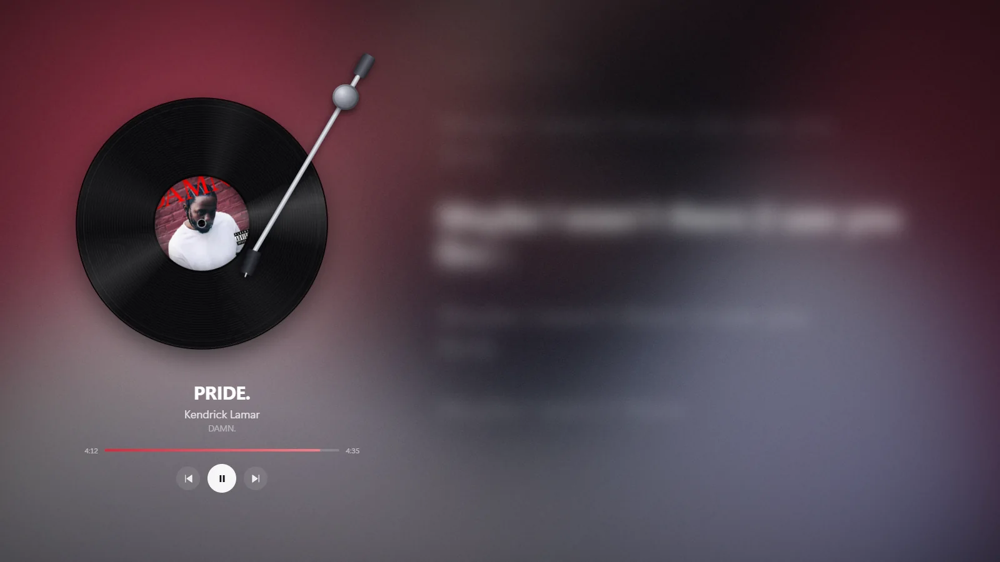

Real vinyl
The album cover becomes the record label, or the whole disc in picture-disc mode. Eased spin-up, a tonearm that tracks the song, and 3D tilt that follows your mouse.
Needledrop is a companion window that follows what Apple Music or Spotify is playing. The album cover becomes the record label, and every lyric line fills in word by word as it is sung.

A spinning record that wears the album cover and lyrics that fill the screen, in a separate window that follows the real Apple Music or Spotify app.
Synced lyrics from LRCLIB, with true per-word timing when it is available and estimated timing when it is not. Each word fills in as it is sung.
Five singing effects (fill, pop, neon, shimmer, wave), five entrances and three layouts: scroll, focus and poster.
The album cover becomes the record label, or the whole disc in picture-disc mode. Eased spin-up, a tonearm that tracks the song, and 3D tilt that follows your mouse.
Fonts, size, colours from the cover or your own, glow, background, vinyl and layout. Save presets and share a look as a short code. Every change is instant.
Background and record pulse with the bass, with an optional equaliser. Audio is analysed in memory in the window and never recorded or sent anywhere.
Shrink to a small always-on-top card with the current line, or let the screensaver take over after idle time: a big clock, the drifting cover and poster-size lyrics.
Previous, play-pause and next from the window or keyboard, tray menu, launch at startup, and a global hotkey (Ctrl+Alt+L, or Ctrl+Alt+K in the Spotify edition) to show or hide it from any app.
Real screenshots of the Apple Music edition. The Spotify edition has the same window. The lyrics are blurred here because they belong to their writers; in the app they are sharp.
Nothing is injected into Apple Music or Spotify. Needledrop reads what the player already publishes to Windows.
Apple Music or Spotify publishes what is playing to the Windows media session, the same one that powers the system volume flyout.
It samples that session about 2.5 times a second and time-stamps every sample, so lyrics, vinyl and tonearm run from one clock and never drift apart.
Lyrics are looked up on LRCLIB, cached locally and matched to the song. Per-word timing is used where it exists and estimated otherwise.
To find lyrics, Needledrop sends the song title, artist, album and duration to lrclib.net. Nothing else leaves your computer.
No sign-up, no login, no analytics and no tracking of any kind.
Audio is analysed in memory for the bass reaction and then discarded. Nothing is recorded or played back.
Settings and the lyrics cache live in your user profile and are kept when you uninstall.
MIT licensed. The lyrics logic is unit-tested, and you can read every line that runs.
Free and open source. Pick the edition for your player, unzip it and double-click Install.cmd.
The Spotify edition has not yet been tested with a real Spotify account. If you try it, tell us what happened.
No. Needledrop is an independent project and is not affiliated with, endorsed by or sponsored by Apple Inc. or Spotify AB. “Apple Music” is a trademark of Apple Inc. and “Spotify” is a trademark of Spotify AB, used only to say which apps Needledrop works with.
There is a separate Spotify edition, currently in beta. It starts, runs its built-in demo and installs correctly, but it has not yet been tested against a live Spotify session. It is meant for Spotify Premium and does not handle ads.
No. It is free and has no accounts of its own. You keep using your Apple Music or Spotify account in the player itself.
The app itself runs locally. Looking up lyrics needs an internet connection the first time; found lyrics are cached on your computer.
Yes. Run the demo mode from source (npm run demo) for a built-in fake song, three demo tracks and word-timed lyrics.
Shift the sync for that song with the [ and ] keys (hold Shift for whole seconds), or use the sync slider. You can also drop an .lrc or .txt file on the window to set a song’s lyrics.
Use Settings, Apps like any other program. Your settings and lyrics cache are kept unless you delete them.